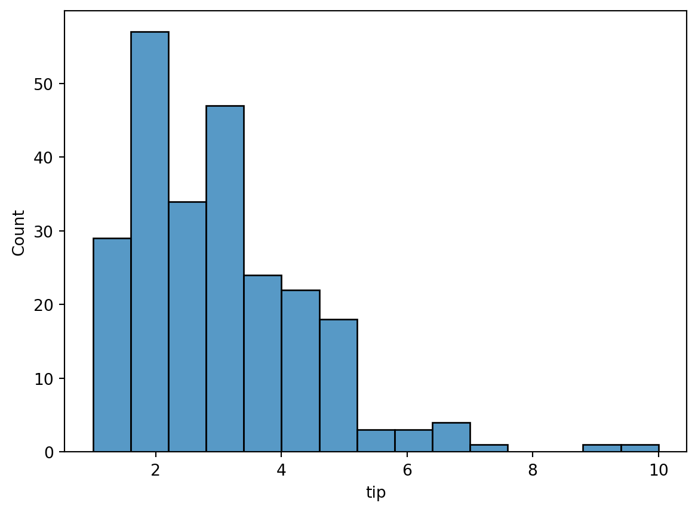

In this tutorial we will cover some additional common plots.
Histograms
A histogram is a graphical representation of the distribution of numerical data. It is an estimate of the probability distribution of a continuous variable. In Seaborn we create a histogram using the histplot function.
To illustrate its use, we’ll use the tips data in Seaborn:
import seaborn as snstips = sns.load_dataset('tips')tips.head()
total_bill
tip
sex
smoker
day
time
size
0
16.99
1.01
Female
No
Sun
Dinner
2
1
10.34
1.66
Male
No
Sun
Dinner
3
2
21.01
3.50
Male
No
Sun
Dinner
3
3
23.68
3.31
Male
No
Sun
Dinner
2
4
24.59
3.61
Female
No
Sun
Dinner
4
The data was collected by a waiter (in the 90s, I think) over several months. (Note that smoking was still allowed in restaurants when this data was taken. Ah, the 90s… I don’t miss everything about you.)
Lets make a histogram of the tip amounts:
sns.histplot(data=tips, x='tip', bins=15)

The y-axis is the number of tips in the given bin. The bins argument specifies the number of bins to group the data into. We don’t actually need to specify that (more on that below), but for now, we’ll just use 15 as a good number.
The tip column is just the raw dollar amount of the tips. It’d be more interesting to see what the tip percentage is (i.e., the tip divided by the total bill). To plot that, we’ll first need to add a column of tip percentage to our data:
We see it’s peaked around 15%, which was the standard tip amount at that time.
This is interesting, but we have additional data here. Let’s see how tip percentage breaks down by sex. As with the other plot commands, we accomplish that using the hue keyword argument:
Interesting, but it’s a little hard to compare the two histograms here since there are more males than females. What we actually want to plot on the y-axis is a probability density, or, to make it more understandable, a percent to indicate what fraction of men and women tipped a given amount. We can convert the histogram from a count to a density using the stat command. There’s several options it takes, but to get it to plot a percent, we set it to percent:
Hmm, closer, but there still appears to be a larger percentage of males than females. The reason is that the histograms are normalized together: i.e., the histogram heights are showing the percent of the total population, which includes both males and females. What we actually want is each histogram to be normalized separately, so that the histogram heights show the percentage of men or women that tip a given amount. To do that, we can add the common_norm=False argument:
Then, while it’s clear a larger fraction of women tipped in the ~12-20% range, a larger fraction of men tipped inthe ~20-30% range. Using other bin numbers (try it!) can give other impressions.
So what’s the appropriate number of bins to use? There are various “rules” out there to select the right number. Seaborn (via numpy) has those rules coded up. In fact, you can pass a string to bins to invoke one of those rules instead of a number. The possiblities are documented in numpy’s histogram_bin_edges function, which is what the bins argument calls. If you don’t provide any bins argument, the default ('auto') will use a combination of rules to try to give a good estimate:
Choosing the appropriate bin width is always a challenge when making histograms. An alternative is to instead use a kernel density estimatation (KDE). A KDE is a method of interpolating the data to get a smooth curve. Basically, a KDE sticks a little Gaussian distribution around each data point, then sums them up to get an overall distribution. Since there are no bins involved, it can provide a more robust estimate of the distribution.
You can easily add a KDE to a histogram by turning on the kde=True keyword argument:
The lines plotted on top of the histogram show the KDE. Notice that they’re smooth, and independent of the bins (try changing the number of bins; you’ll get the same KDE plot).
There are a couple things to be aware of with KDEs:
KDEs have “bandwidth” parameter that determines how wide to make the little Guassians that are added around each data point. This is like the bins in a histogram. Too narrow a bandwidth will give too bumpy a distribution that obfuscates macro trends, while too wide will give an over smoothed distribution that may hide micro trends. You can adjust the bandwidth with additional keyword arguments. Using the default is usually pretty good though.
Due to their smoothing nature, KDEs tend to leak over hard boundaries. For example, if you built a KDE of age distrubtions of children, you may get a tail to negative numbers, which doesn’t make sense.
CautionCode Challenge 2.1
Use the Palmer penguins data to make a histogram of the bill length of penguins, separated by species. Plot density on the y-axis, turn on a KDE, and normalize the distributions by species.
Often we want to see counts or population density over two parameters. We can use histplot to make 2D histograms. To do that, just pass in the extra dimension as a y arugment. For example, here’s a 2D histogram of the Palmer penguins flipper length versus bill length:
Here, the darker the color, the larger the count. We can see exactly what color corresponds to what count by turning on a colorbar with the cbar argument:
The outer contour corresponds to the 0.1 level, while the inner contour corresponds to the 0.5 level. The contours are centered on the highest density. This means that 90% of the population is within the 0.1 level, and 50% of the population is within the 0.5 level.
LM Plots
A lmplot is a scatterplot with a linear regression line.
Linear regression is a linear approach to modeling the relationship between a scalar response (or dependent variable) and one or more explanatory variables (or independent variables). The case of one explanatory variable is called simple linear regression; for more than one, the process is called multiple linear regression.
To illustrate, let’s use the tips data to compare total bill to tip amount, separated by the diner’s sex:
A box plot is a method for graphically depicting groups of numerical data through their quartiles. The box extends from the Q1 to Q3 quartile values of the data, with a line at the median (Q2). The whiskers extend from the edges of the box to show the range of the data.
They extend no more than 1.5 * IQR (Inter-quartile-range) (IQR = Q3 - Q1) from the edges of the box, ending at the farthest data point within that interval.
The line through the box is the median value of the data.
The box represents the interquartile range. Q3 - Q1
The whiskers represent the range of the data, defaults to 1.5 * (Q3 - Q1), a general rule for outliers.
Outliers are plotted as separate points.
Think of a box plot as a must more detailed bar chart, since it tells you much more about the data than just totals.
A violin plot is like the combination of a box plot and a histogram. It uses a kernel density estimate to show the probability density of the data at different values.
We’ll use the tips data to illustrate them.
# this will help us to see what the box plot and violin plot are showing ustips.describe()
total_bill
tip
size
tip_percentage
count
244.000000
244.000000
244.000000
244.000000
mean
19.785943
2.998279
2.569672
16.080258
std
8.902412
1.383638
0.951100
6.107220
min
3.070000
1.000000
1.000000
3.563814
25%
13.347500
2.000000
2.000000
12.912736
50%
17.795000
2.900000
2.000000
15.476977
75%
24.127500
3.562500
3.000000
19.147549
max
50.810000
10.000000
6.000000
71.034483
Here’s a box plot of total bill by day:
# median = 17.79# 25% = 13.3475# 75% = 24.1275sns.boxplot(data=tips,y='total_bill')
Here’s the equivalent violin plot:
sns.violinplot(data=tips,y='total_bill')
Let’s create a boxplot of total bill by day and smoker: